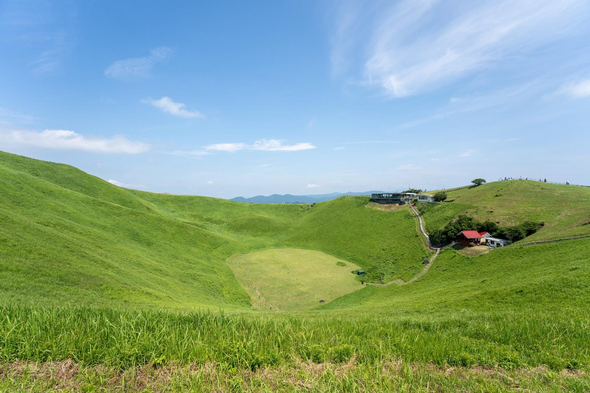
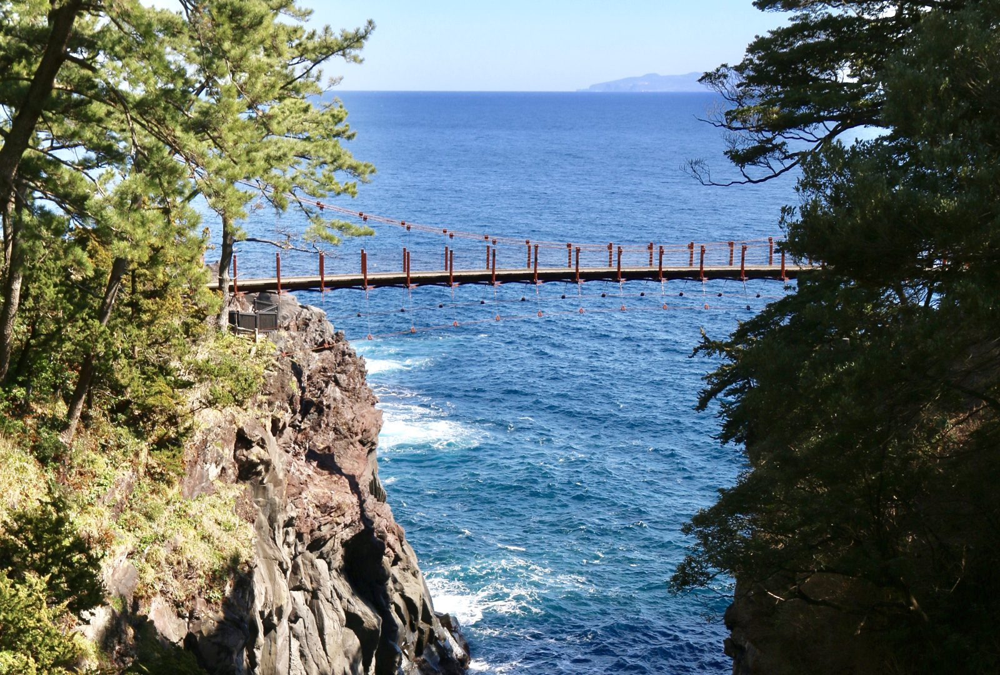
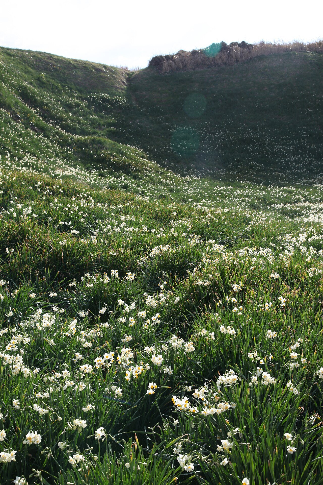
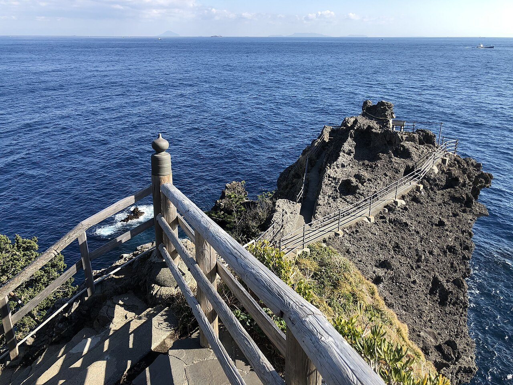
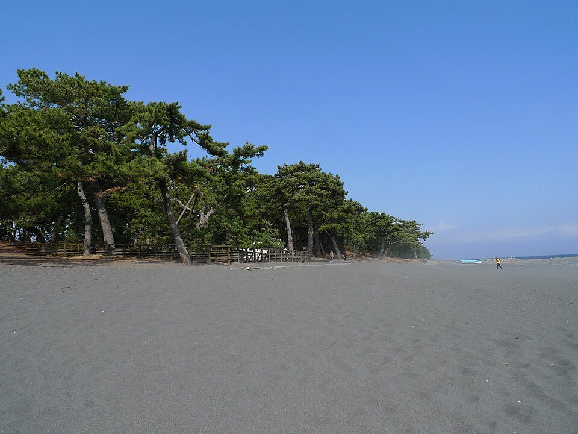

三个方案共用的骨架
- 12/31：21:30 落羽田 → 京急 13 分钟到品川，住 1 晚，只睡觉
- 1/1–1/3：离开东京，在基地连住 2 晚 — 三方案的区别只在这里
- 1/3：上午北上回东京（避开返程高峰），下午银座/新宿新年初卖购物，东京住 1 晚
- 1/4：睡到自然醒，补买伴手礼，12:00 出发去羽田，15:00 飞北京
- 已砍掉：teamLab（不去了）、晴空塔（2017 年去过）
一图看懂三方案
| A · 伊东 | B · 下田 | C · 静冈/清水 | |
|---|---|---|---|
| 1/1 车程 | 踊り子号约 1.5 小时 | 踊り子号约 2.7 小时（最远） | 新干线约 1 小时（最近） |
| 酒店 2 晚 | かめや楽寛 ¥77,140（无餐） | 清流荘 ¥88,920（无餐） | Associa 静冈 ¥89,800（无餐）起 |
| 私人温泉 | ✅ 可预约包场露天风吕（方案含 1 次免费） | ✅ 房间自带源泉挂流温泉 + 可预约包场 | ❌ 无可订的私人温泉（见下方说明） |
| 主打景色 | 大室山环火山口 + 城崎海岸 | 爪木崎水仙花海 + 石廊崎 | 三保松原 + 日本平看富士山 |
| 富士山 | 大室山山顶直面，冬季能见度全年最高 | △ 不是主打（海景为主） | 经典构图，冬季上午可见率约 70% |
| 徒步 | 城崎海岸 5km，海岸步道主菜 | 须崎海岸步道 2.7km + 岬散策 | 松原海滩散步为主，强度低 |
| 当季限定 | 水豚泡温泉（冬季限定） | 水仙节盛花期（12/20–1/31） | — |
| 1/3 返程 | 约 1.5 小时 | 约 2.7 小时，车上时间最长 | 新干线约 1 小时，最省力 |
| 硬伤 | 无明显硬伤 | 车程长；清流荘 1/1 余房紧 | 温泉不达标，只能住城市酒店 |
方案 A · 伊东（温泉 + 徒步最均衡）
1/1 周五
睡醒南下 — 伊东到达日
- 睡到自然醒，行李寄存品川酒店或直接带上车
- 中午品川坐「踊り子号」，约 13:00 到伊东，入住 かめや楽寛
- 下午：小室山轻徒步（缆车+山顶海景咖啡）或伊东海岸散步
- 傍晚：第一汤（包场露天风吕），晚餐吃金目鲷

1/2 周六
大室山 — 环火山口看富士山
- 缆椅登顶，沿火山口走一圈约 1km / 40 分钟
- 冬季富士山能见度全年最高；注意 1 月山体是枯黄色，不是照片里的绿色

1/2 周六
城崎海岸徒步 — 本方案主菜
- 桥立吊桥 → 门胁吊桥：约 5km / 2.5–3 小时
- 熔岩悬崖、松林、海蚀地貌，运动鞋即可，海岸风大带防风外套

1/2 周六 · 取舍项
水豚泡温泉 + 伊豆高原灯光秀
- 伊豆仙人掌动物公园：水豚露天风吕冬季限定（本季至 2027-04-04）
- ⚠️ 全程走海岸徒步就赶不上 13:30 的水豚场次 — 二选一，或徒步走缩短版
- 天黑后伊豆高原 Gran Illumi 灯光秀，回伊东泡第二汤
住宿（已实查，2026-11-13）：かめや楽寛 2 晚 ¥77,140 — 伊东站步行 3 分钟，禁烟海景和室 10 叠；4 个可预约包场露天风吕，方案含 1 次 45 分钟免费包场，另有 1 个免费免预约包场池。无餐，晚餐在伊东站周边解决。余房尚多。同日期游季亭已售罄、聚乐 ¥220,400（超预算）。
方案 B · 下田（水仙花海 + 源泉温泉）
1/1 周五
一路坐到伊豆最南端 — 下田到达日
- 睡醒后品川坐「踊り子号」直达伊豆急下田（约 2 小时 40 分），下午到
- 下田老城散步（佩里路一带）或白滨海岸看海
- 入住清流荘：房间里就是源泉挂流温泉，到店先泡一汤

1/2 周六
爪木崎 — 水仙节正盛期
- 水仙节 2026-12-20 至 2027-01-31，约 300 万株野水仙，1 月初正是盛花期（已核实覆盖行程日期）
- 白灯塔 + 俵矶柱状节理海岸；下田站巴士约 15 分钟
- 体力够可走须崎·爪木崎海岸步道约 2.7km

1/2 周六
石廊崎 — 伊豆半岛最南端
- 下田站巴士约 45 分钟，悬崖岬角 + 白色灯塔（日本灯塔 50 选）
- 晴天可望伊豆七岛；海岬步道走一圈约 1 小时
- 傍晚回下田，晚餐吃海鲜，房间里泡源泉汤
住宿（已实查，2026-11-20）：清流荘 2 晚 ¥88,920（官网在线预付 5% 优惠价；标准价 ¥93,600）— 和式双床房自带源泉挂流室内温泉，另有可预约的露天包场家庭浴「月夕之汤」¥1,650/50 分钟。该日期只有无餐方案，晚餐可在下田镇上吃或订旅馆送餐。⚠️ 这个房型 1/1 只剩 2 间（11/20 查），选 B 要尽快定。
备选：ホテル伊豆急 ¥149,600（含两餐，包场温泉浴另付 ¥2,200/50 分钟）— 超出预算 ¥40,600；观音温泉、别邸洛邑 1/1–1/3 已售罄/候补。
备选：ホテル伊豆急 ¥149,600（含两餐，包场温泉浴另付 ¥2,200/50 分钟）— 超出预算 ¥40,600；观音温泉、别邸洛邑 1/1–1/3 已售罄/候补。
方案 C · 静冈/清水（三保松原 + 日本平）

1/1 周五
新干线西行 — 三保松原看富士山
- 品川坐新干线约 55 分钟到静冈；出发前先看三保实况摄像头确认富士山露脸
- 上午到三保松原：黑沙滩 + 约 3 万株松林 + 隔骏河湾的富士山，世界遗产经典构图，散步约 1.5 小时
- 中午清水港吃金枪鱼（清水是日本金枪鱼卸货量第一的港口）
- 下午日本平梦露台：隈研吾设计的木结构展望台，360° 看富士山+骏河湾+三保松原（1/1 起恢复营业）
1/2 周六
富士山第二次机会 + 静冈市区
- 上午再给富士山一次机会：三保或日本平二选一（哪天天气好去哪天，行程可对调）
- 1/2 是周六，梦露台开到 21:00 — 可以傍晚再去看日落+夜景
- 其余时间静冈市区：骏府城公园散步、静冈茶、站前购物
- 代价：这一天没有徒步主菜，整体是「看景+城市」节奏
C 方案的硬伤（如实说明）：清水·三保·烧津一带 1/1–1/3 没有可订到的私人温泉住宿。
- 唯一符合「私人温泉」的烧津汀家（全房自带露天风吕，评分 4.8）：1/1、1/2 只剩候补，订不到（参考价约 ¥48,000/晚起）
- 能订到的只有：静冈站前 Associa ¥89,800（非温泉城市酒店，胜在交通，顶层大堂可看富士山）；烧津 Marine Palace ¥71,400（含两餐，但只有公共室内浴池，且只剩最后 1 间）
- 三保松原旁的老牌三保園酒店已于 2021 年停业；日本平酒店 1/1–1/3 凑不出连住
- 结论：选 C = 用「私人温泉」换「三保+最短车程」，温泉只能降级为公共浴池或不泡
需要一起拍板的事
主决策：三方案选哪个 — A 伊东（均衡，价格最低）、B 下田（花海+源泉房内汤，车程最长）、C 静冈（富士山构图+最省力，但放弃私人温泉）？
若选 B：清流荘 1/1 同房型只剩 2 间（11/20 查），决定后建议立刻订；订金方式为在线预付享 5% 优惠。
若选 A：1/2 徒步全程还是水豚优先（或徒步缩短版兼顾）？
共同项：1/3 东京最后一晚住品川（去羽田 13 分钟）还是银座一带（下楼就是购物区，去羽田约 40 分钟）？
订票时间点（别错过）
- 12 月 1 日 10:00（日本时间）：1/1 南下车次指定席开售（A/B 的踊り子号、C 的新干线都适用；年末年始热门车次全席指定，必须抢）
- 12 月 3 日 10:00（日本时间）：1/3 回东京车次开售（当天是返程最高峰）
- 酒店：选定方案后尽快订 — 新年档房源只会减少